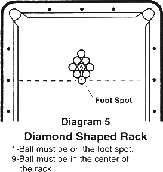

[Standardized World Rules 1997]
Except when clearly contradicted by these additional rules, the General Rules of Pocket Billiards apply.
1 OBJECT OF THE GAME. Nine Ball is played with nine object balls numbered one through nine and a cue ball. On each shot the first ball the cue ball contacts must be the lowest-numbered ball on the table, but the balls need not be pocketed in order. If a player pockets any ball on a legal shot, he remains at the table for another shot, and continues until he misses, fouls, or wins the game by pocketing the 9-ball. After a miss, the incoming player must shoot from the position left by the previous player, but after any foul the incoming player may start with the cue ball anywhere on the table. Players are not required to call any shot. a match ends when one of the players has won the required number of games.
2. RACKING THE BALLS. The object balls are racked in a diamond shape, with the one ball at the top of the diamond and on the foot spot, the nine ball in the center of the diamond, and the other balls in random order, racked as tightly as possible. the game begins with cue ball in hand behind the head string.

3. LEGAL BREAK SHOT. The rules governing the break shot are the same as for other shots except:
a. The breaker must strike the 1-ball first and either pocket a ball or drive at least four numbered balls to the rail.
b. If the cue ball is pocketed or driven off the table, or the requirements of the opening break are not met, it is a foul, and the incoming player has cue ball in hand anywhere on the table.
c. If on the break shot, the breaker causes an object ball to jump off the table, it is a foul and the incoming player has cue ball in hand anywhere on the table. The object ball is not respotted (exception: if the object ball is the 9-ball, it is respotted).
4. CONTINUING PLAY. On the shot immediately following a legal break, the shooter may play a "push out." (See Rule 5.). If the breaker pockets one or more balls on a legal break, he continues to shoot until he misses, fouls, or wins the game. If the player misses or fouls, the other player begins his inning and shoots until he misses, fouls, or wins. the game ends when the nine ball is pocketed on a legal shot, or the game is forfeited for a serious infraction of the rules.
5. PUSH OUT. The player who shoots the shot immediately after a legal break may play a push out in an attempt to move the cue ball into a better position for the option that follows. On a push out, the cue ball is not required to contact any object ball nor any rail, but all other foul rules still apply. The player must announce his intention of playing a push out before the shot, or the shot is considered to be a normal shot. Any ball pocketed on a push out does not count and remains pocketed except the 9-ball. Following a legal push out, the incoming player is permitted to shoot from that position or to pass the shot back to the player who pushed out. A push out is not considered to be a foul as long as no rule (except rules 7. and 8.) is violated. An illegal push out is penalized according to the type of foul committed. After a player scratches on the break shot, the incoming player cannot play a push out.
6. FOULS. When a player commits a foul, he must relinquish his run at the table and no balls pocketed on the foul shot are respotted (exception: if a pocketed ball is the 9-ball, it is respotted). The incoming player is awarded ball in hand; prior to his first shot he may place the cue ball anywhere on the table. If a player commits several fouls on one shot, they are counted as only one foul.
7. BAD HIT. If the first object ball contacted by the cue ball is not the lowest- numbered ball on the table, the shot is foul.
8. NO RAIL. If no object ball is pocketed, failure to drive the cue ball or any numbered ball to a rail after the cue ball contacts the object ball on is a foul.
9. IN HAND. When the cue ball is in hand, the player may place the cue ball anywhere on the bed of the table, except in contact with an object ball. He may continue to adjust the position of the cue ball until he takes a shot.
10. OBJECT BALLS JUMPED OFF THE TABLE. An unpocketed ball is considered to be driven off the table if it comes to rest other than on the bed of the table. It is a foul to drive an object ball off the table. The jumped object ball(s) is not respotted (exception: if the object ball is the 9-ball, it is respotted) and play continues.
11. JUMP AND MASSE SHOT FOUL. If a match is not refereed, it will be considered a cue ball foul if during an attempt to jump, curve or masse the cue ball over or around an impeding numbered ball, the impeding ball moves (regardless of whether it was moved by a hand, cue stick follow-through or bridge).
12. THREE CONSECUTIVE FOULS. If a player fouls three consecutive times on three successive shots without making an intervening legal shot, he loses the game. The three fouls must occur in one game. The warning must be given between the second and third fouls.
A player's inning begins when it is legal for him to take a shot and ends at the end of a shot on which he misses, fouls or wins, or when he fouls between shots.
13. END OF GAME. A game starts as soon as the cue ball crosses over the head string on the opening break. The 1-ball must be legally contacted on the break shot. The game ends at the end of a legal shot which pockets the 9-ball; or when a player forfeits the game as the result of a foul.